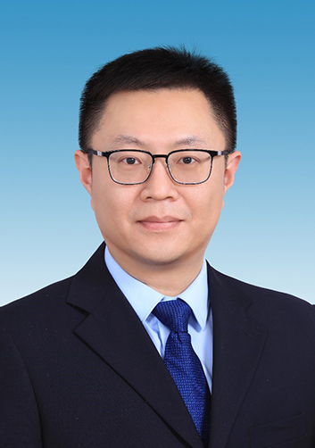

高松 - 简介
高松，博士，教务处副处长，负责专业、人才培养方案、实践教学等工作。开展了学校“十四五”学科专业建设规划修订、专业群建设方案起草、22版人才培养方案调整优化和实践教学体系建设等专项工作。
教学成果
- 指导学生授权专利1项
- 立项省级大学生创新业训练计划项目1项
- 主持完成校级教改项目1项
- 获教育信息化优秀成果二等奖1项
高松，博士，教务处副处长，负责专业、人才培养方案、实践教学等工作。开展了学校“十四五”学科专业建设规划修订、专业群建设方案起草、22版人才培养方案调整优化和实践教学体系建设等专项工作。